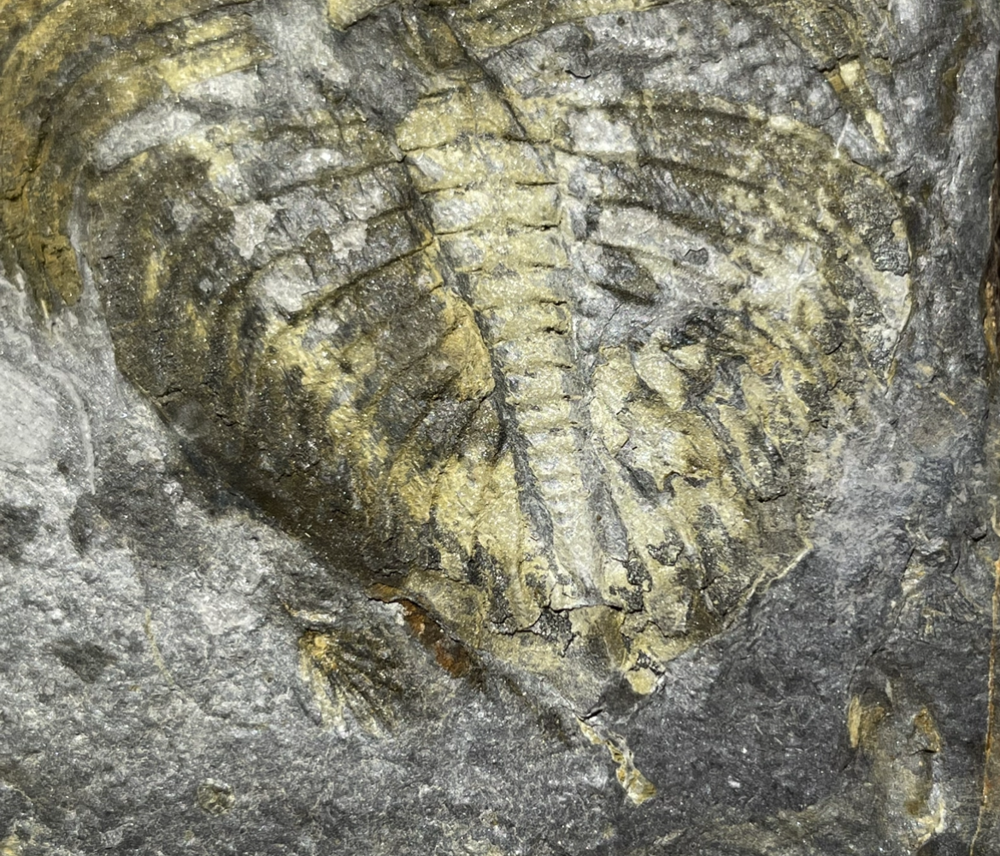
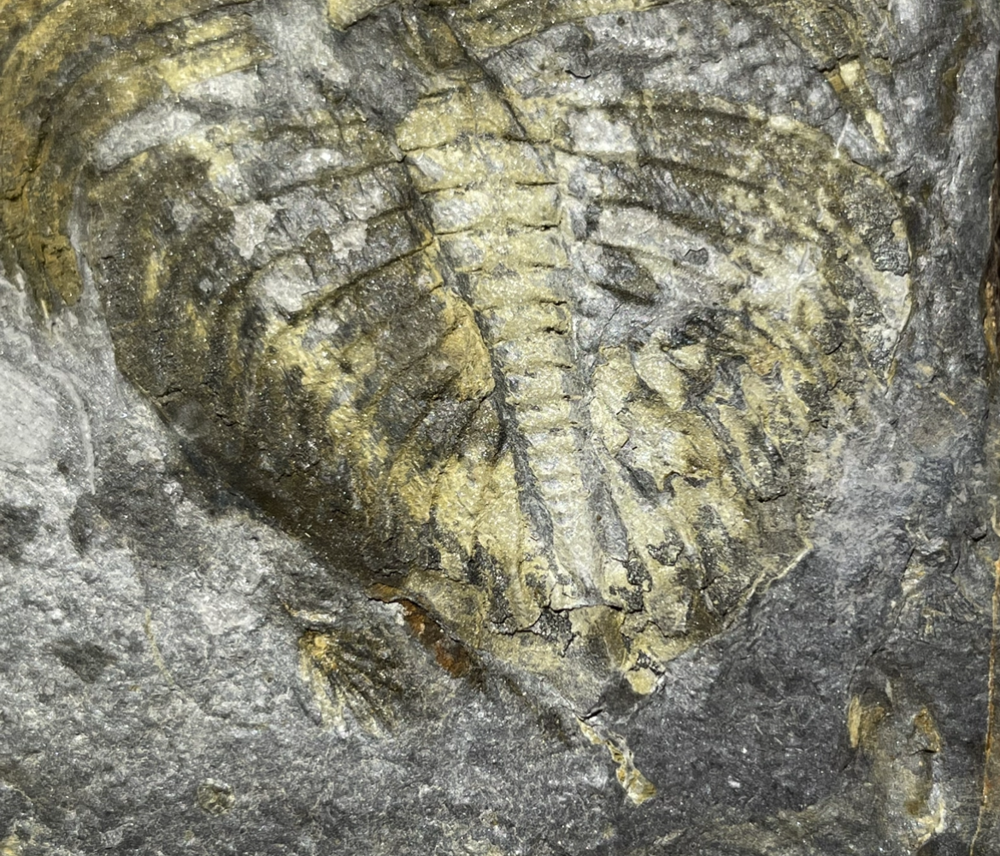

Trilobite
"Kasachstania" gerardoi
• Silurian
• Catavi Formation
• Araca, La Paz Department, Bolivia
Size: 10.5 cm
Enrique Alberto Randolfe has identified this unusual trilobite as "Kasachstania" gerardoi, which has been excluded from the genus Kasachstania and currently has uncertain generic assignment, but appears to be a new, undescribed genus closely related to Kasachstania (Randolfe et al. 2020). This taxon was originally described from highly fragmentary material consisting of partial cephalons, thoraxes and pygidiums, and the holotype is just a pygidium (Edgecombe and Ramsköld 1994). According to Dr. Randolfe, complete articulated specimens such as this are very important for establishing reliable links between cephalon and pygidium and distinguishing "K." gerardoi from the related Dalmanites andii in a formal description.

 
